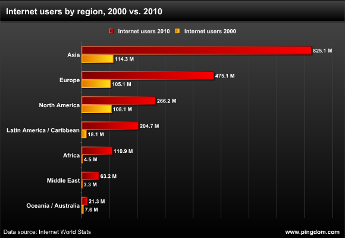

Evolution Of The Web
Evolution Of The WebWeb 2.0 was released in 2004 and was coined the "read-write web". This was because Web 2.0 introduced more interactive and dynamic webpages. This meant there was more functionality, a more refined client and server, a bigger emphasis on communication. It showcased the advancements past its predecessor in every way. Web 2.0 encouraged more creativity and collaboration, this included podcasting, blogging, social media, etc. Social media such as YouTube, MySpace, Facebook, etc, were developed at this time. Users were more interactive than ever before through a multitude of mediums, such as forums, wikis, online reviews, etc. Businesses and services became present on the web as services such as Amazon, Google, or Wikipedia at this time as well. In 1996, there was roughly around 45 million users globally on the internet, but in 2006 this increased to over 1 billion users globally.
Web 2.0
